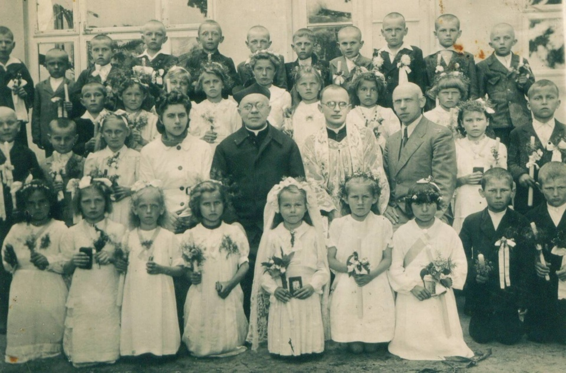
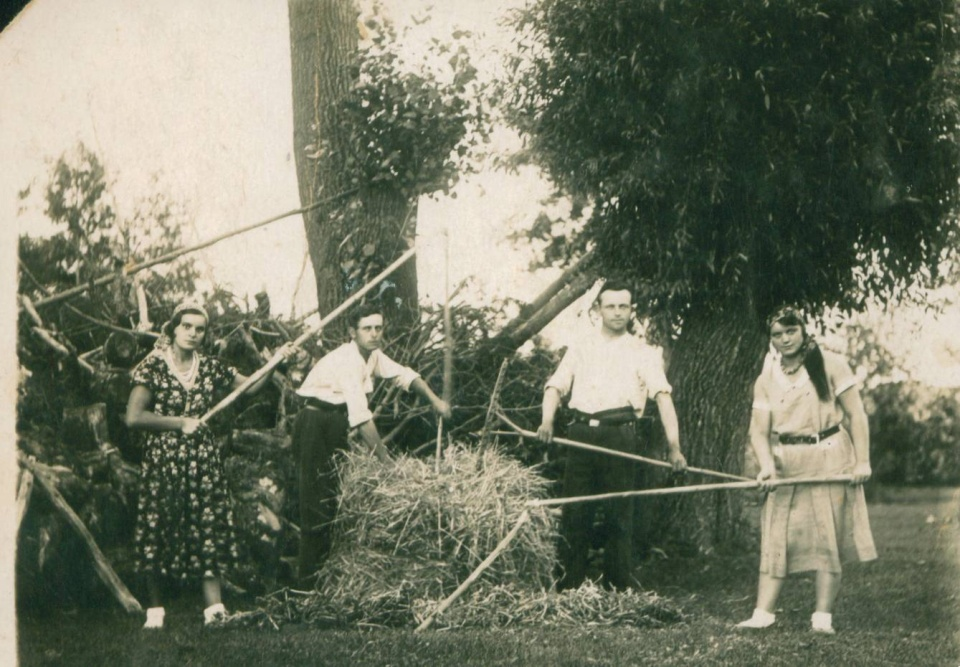
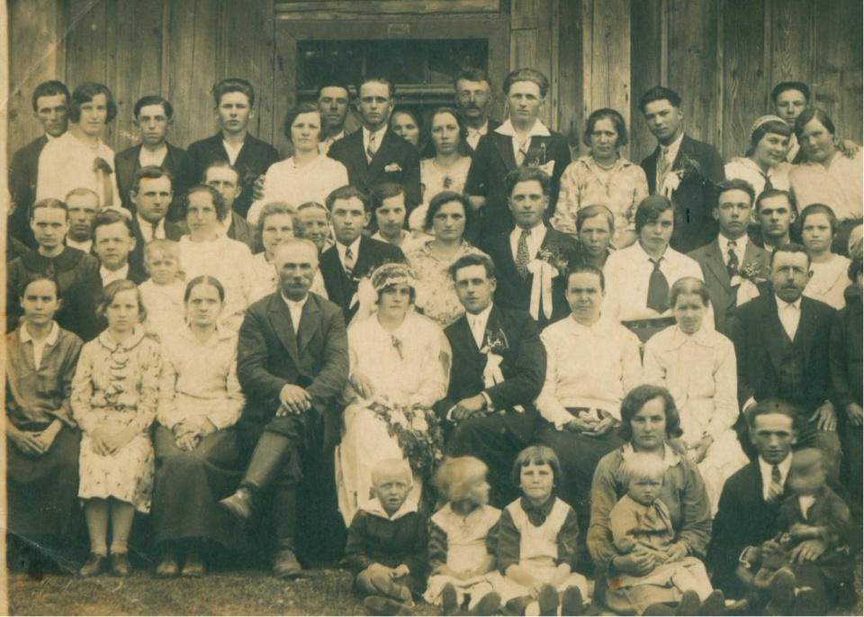
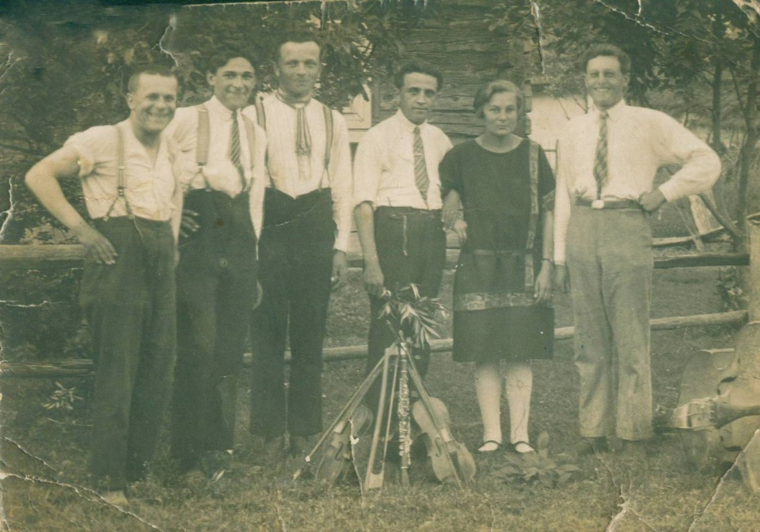

Zdjęcia udostępnione przez Józefę Wolak (Frankowicz) ze Zdziarca
(dziękujemy)

Podpis na zdjęciu "komunia św. wioski Żarówka 1942/43 rok". W górnym rzędzie piąty od lewej
Mieczysław Frankowicz.

Podpis na zdjęciu "Krakowianki będąc u rodziny na wsi zrobiły sobie zdjęcie pamiątkowe koło roku
1931/32". Po bokach stoją "krakowianki", po środku stoi Franciszek (Franek) Frankowicz, od pierwszy od
praej stoi Jakub (Kuba) Frankowicz (bracia).

Zdjęcie weselne Marii i Jakuba Frankowicza (na zdjęciu po środku). Po lewej stronie Jakuba stoi jego
ojciec Mateusz Frankowicz. Po środku w górnym rzędzie Władysława Frankowicz (Kryczka).
Informacja od Anny Mucha z d. Balza: w ostatnim rzędzie druga od prawej strony stoi Maria (Maryna)
Makuch.

Kapela Makuchów ze Zdziarca rok 1932. Trzeci po lewej stoi Franciszek (Franek) Frankowicz, pierwszy
po prawej stoi Jakub (Kuba) Frankowicz.
Informacja od Anny Mucha z d. Balza: od lewej strony (osoby oglądającej zdjęcie) stoją moi wujkowie
Janek i Józek Makuchowie a kobieta to ich siostra Maryna Makuch. Rodzeństwo mojej mamy urodziło się i
mieszkało w tym czasie w Zdziarcu. Oni to jeździli po okolicznych wsiach i grali na weselach i zabawach.
A to zdjęcie niewątpliwie zrobiła ich siostra Anna Makuch.
Zdjęcia przesłała Ela Wnuk.